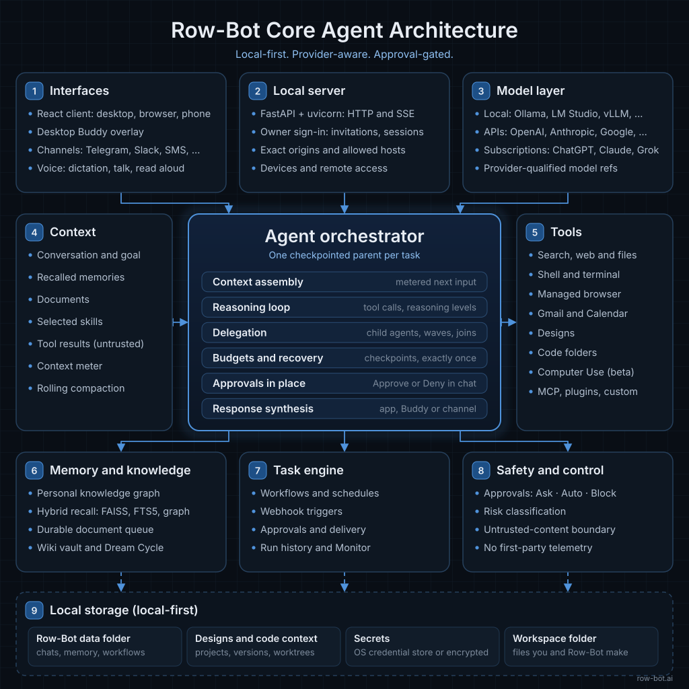
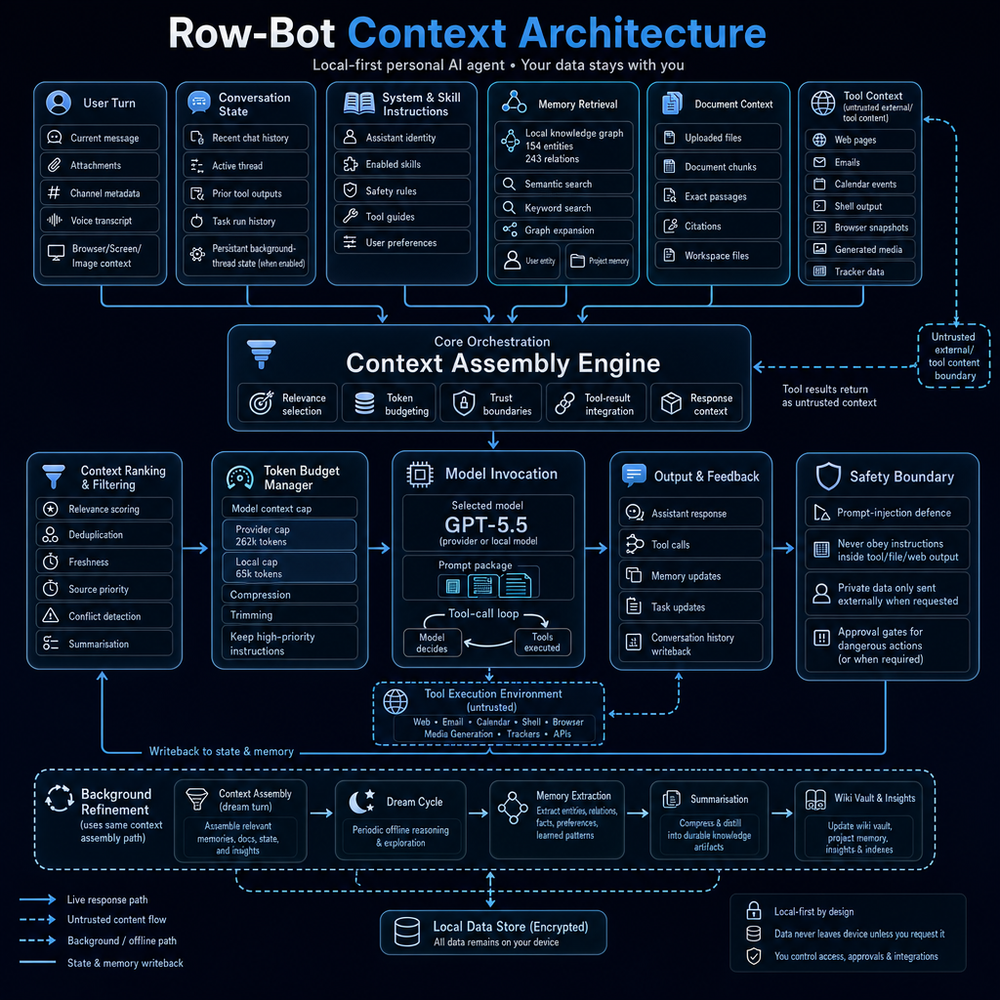
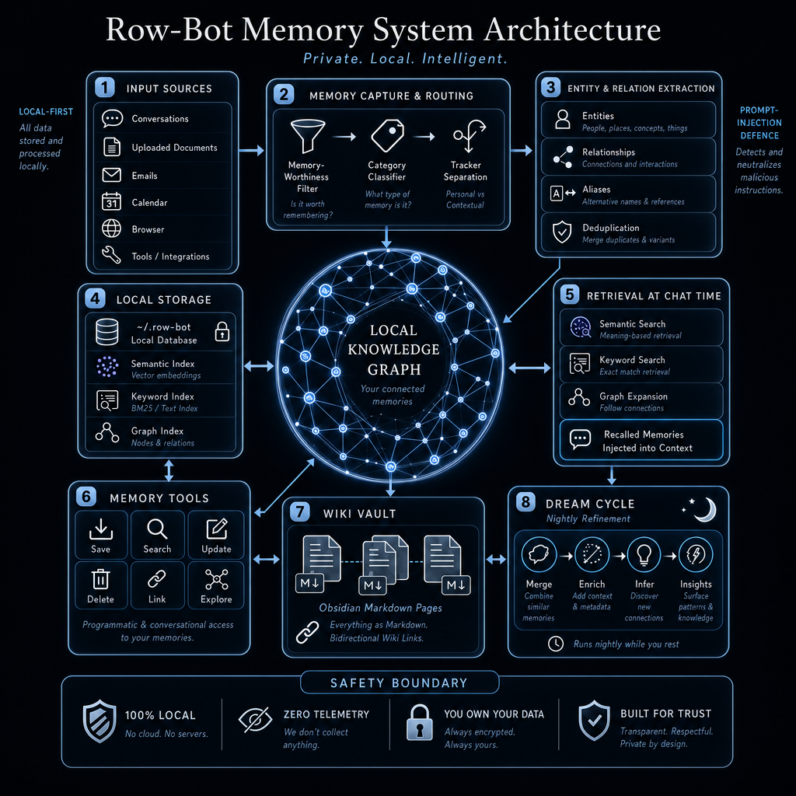
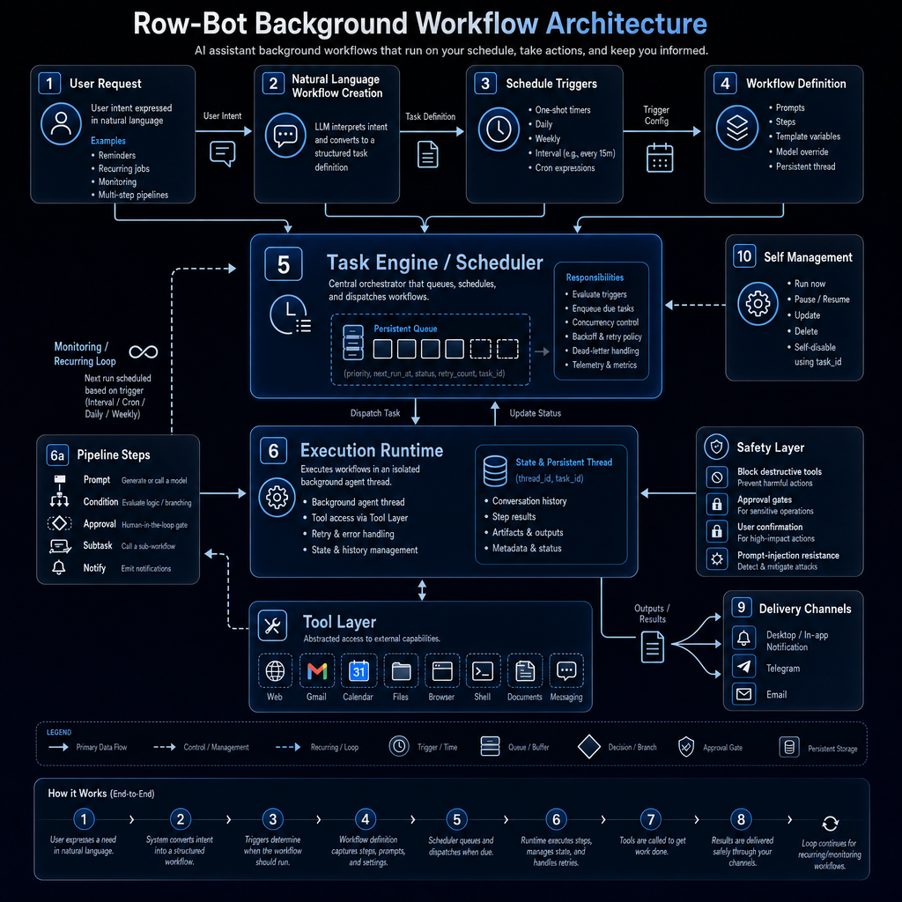
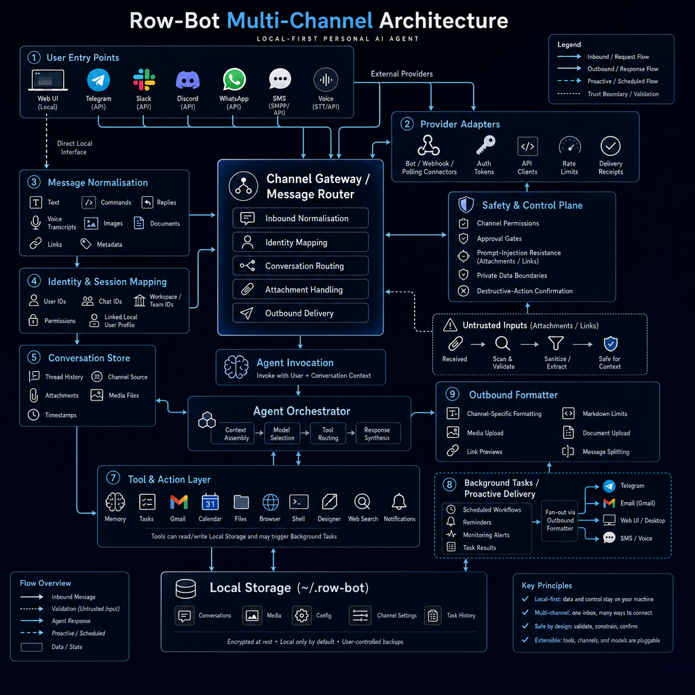
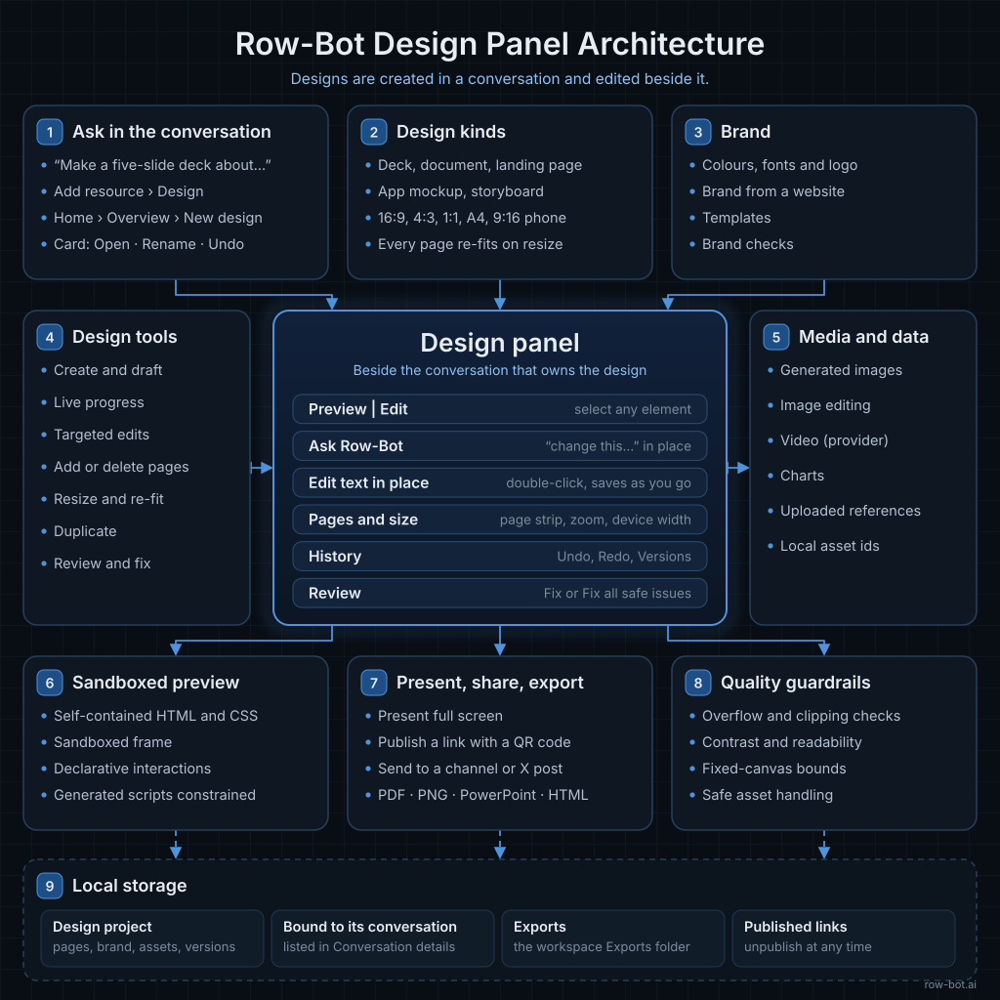
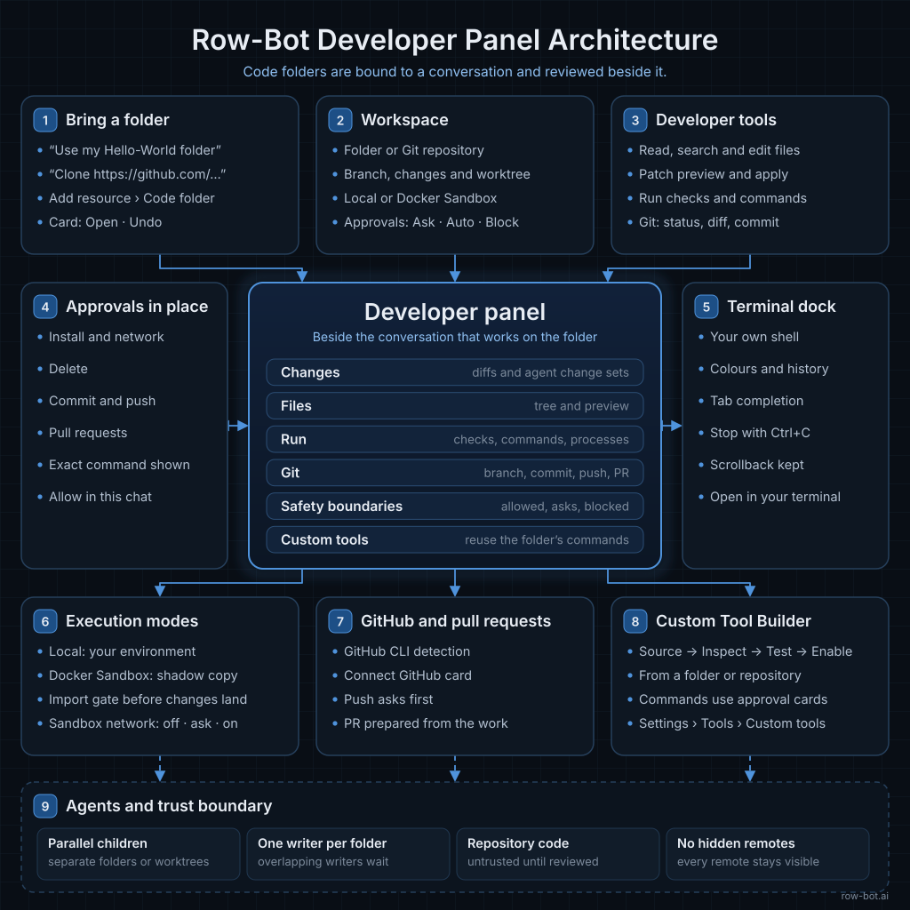
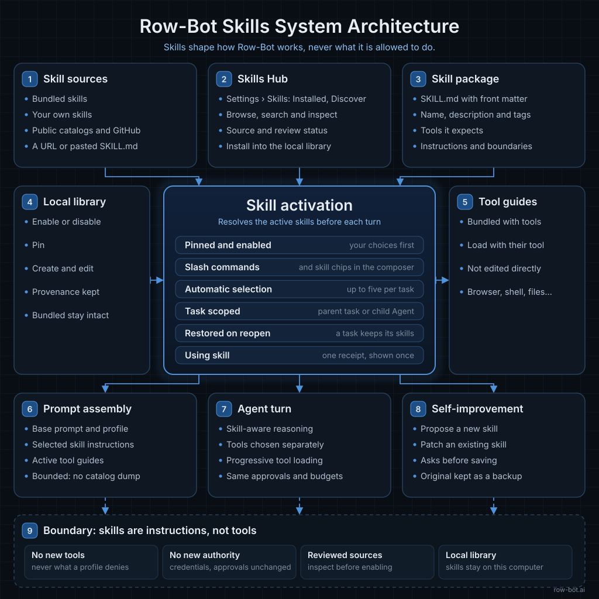
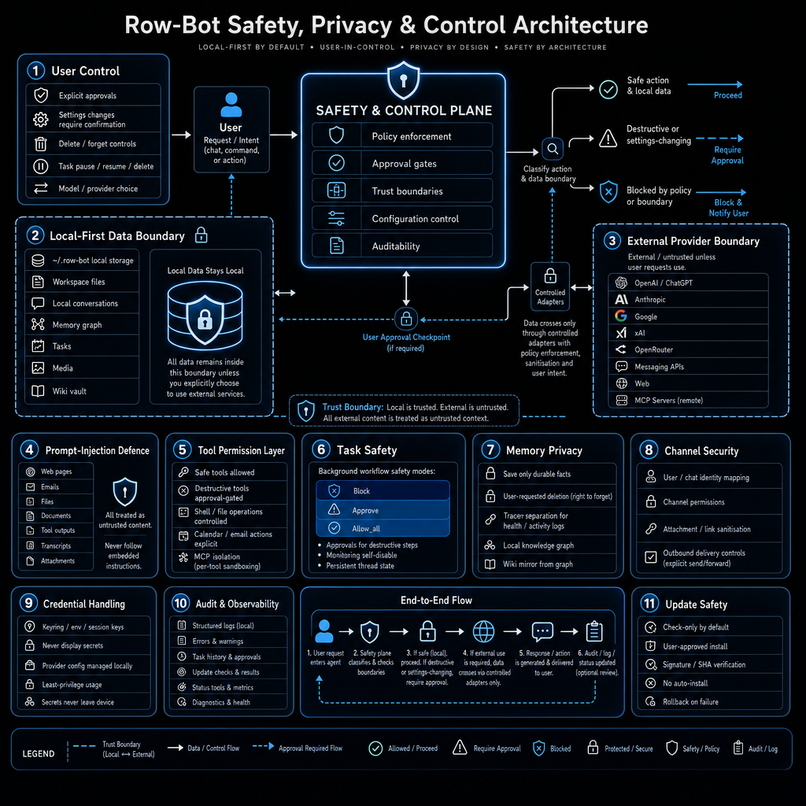
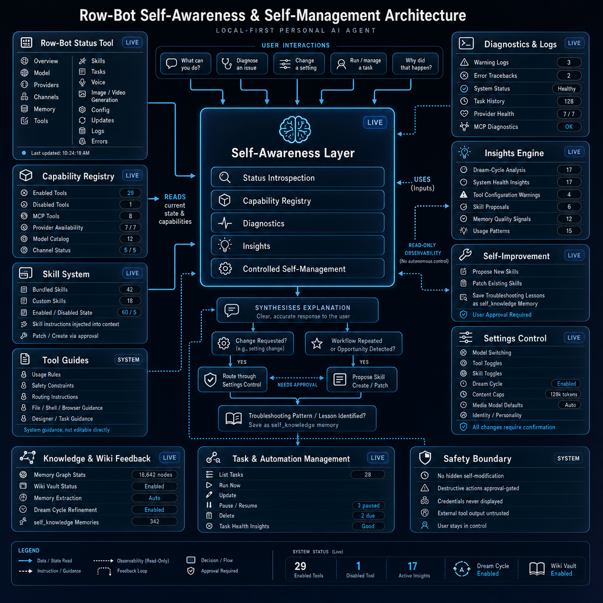

Architecture
How Row-Bot stays local-first.
These high-level subsystem maps show Row-Bot's 5.0 control plane: one React client, in the desktop window, a browser, or on a phone, talks to a local FastAPI server; one checkpointed parent coordinates agent work; conversations, documents, memory, workflows, and project assets stay durable with the host; and exact-model reasoning, context metering, and recoverable compaction remain provider-aware. Designs and code folders belong to the conversation that works on them, tools and skills can load progressively without expanding approval boundaries, OpenCode routes through native model protocols, every signed-in device shares one owner authority, and models, network routes, and optional runtimes remain explicit.

Conversations, orchestration checkpoints, documents, memory, tasks, access records, and project assets live with the Row-Bot host, served to one React client by a local FastAPI server.
One authoritative parent joins required results, tracks dependencies and later waves, and finalizes once across retries, approvals, and restarts.
The desktop app, a browser on another computer, and a phone expose the same owner capability behind invitations, revocable device sessions, exact saved addresses, and host checks.
Hosted models, tools, channels, MCP, Computer Use, Tailscale, and reverse proxies remain separately configured, reviewable, and approval-aware.
Subsystem maps
Open any high-level diagram for a larger view. The gallery starts with the core-agent map, then moves through specialized subsystems; the technical reference documents the current 5.0 runtime and security contracts in detail.

Core Agent
Interfaces, the local server, parent-led orchestration, provider routing, checkpointed budgets, context, memory, tool calls, workflows, storage, and control planes.

Context Assembly
Complete next-input metering, model-aware limits, rolling compaction, durable summaries, and the current turns, skills, memories, documents, and tool results that become model-ready context.

Knowledge Graph
Durable document queues, resumable extraction, atomic sharded retrieval, graph storage, wiki export, and Dream Cycle refinement.

Background Workflows
Natural-language workflow creation, scheduling, execution, approvals, delivery, and recurring loops.

Multi-Channel Runtime
Messaging entry points, adapters, normalization, identity mapping, attachment handling, and delivery.

Design Panel
Conversation-first creation, design kinds and brand, targeted edits and review in the Design panel, preview sandboxing, and present, share, and export paths.

Developer Panel
Code folders bound from the conversation, approval modes, changes, checks, and Git in the Developer panel, the terminal dock, Docker Sandbox, and Custom Tools.

Skills System
Smart Skills activation, task-scoped progressive selection, child isolation, Skills Hub imports, bundled guides, slash commands, and bounded skill prompts.

Safety, Privacy & Control
Local-first boundaries, owner authentication, exact trusted addresses, managed route ownership, approvals, prompt-injection defense, target-window control, encrypted credentials, and updates.

Self-Evolution
Status introspection, diagnostics, capability registry, insights, skill guidance, and controlled self-management.